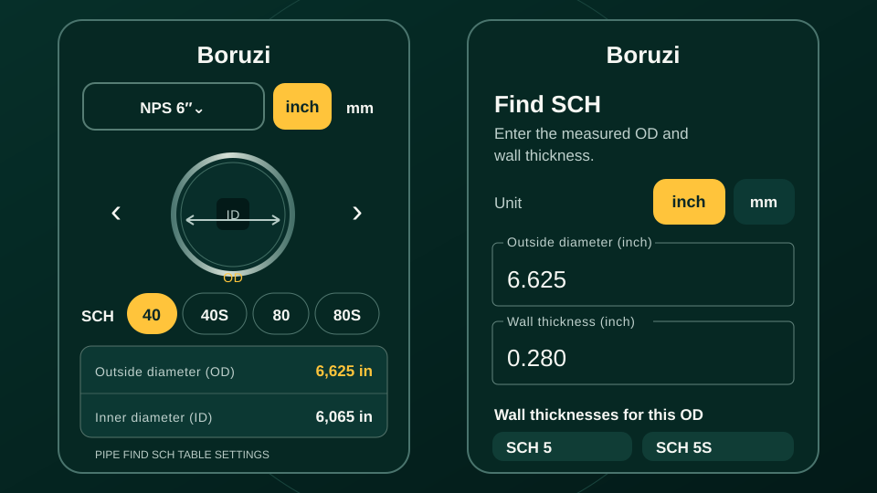

ANDROID · MÜHENDİSLİK ARACI
Boruzi
NPS ve Schedule (SCH) seçimiyle boruların nominal ölçülerini incelemek ve temel hesapları çevrimdışı yapmak için geliştirdiğim Android uygulaması.
01 / ARAYÜZ
Boru ölçüleri tek ekranda
NPS boyutu ve SCH serisi seçildiğinde dış çap (OD), iç çap (ID), et kalınlığı ve birim uzunluktaki ağırlık aynı ekrandaki ölçü tablosunda gösterilir.
Türkçe, İngilizce ve Rusça arayüz, inç/mm seçimi ve ilk kullanım yönlendirmesi bulunur. Nominal hesaplar için internet bağlantısı gerekmez.
Kaynak kodu GitHub'da incele ↗
02 / KAPSAM
Nominal boru verisi ve hesaplar
Uygulama, yerel CSV kataloğundaki NPS/SCH ölçülerini kullanır. ASME B36.10M ve B36.19M ile ilişkili kayıtlar ayrı ele alınır; eksik ölçüler tahmin edilerek doldurulmaz.
İç çap, et kalınlığı, ağırlık ve iç hacim hesapları nominal değerler içindir. Basınç tasarımı, üretim toleransları ve sertifikasyonun yerini tutmaz.
- Boru: NPS/SCH seçimi ve ölçü tablosu
- SCH Bul: Ölçülen dış çap ve et kalınlığıyla nominal eşleşme arama
- Tablo / Standart: Katalog ölçüleri ve hesaplama bilgileri
- Araçlar ve Ayarlar: Yardımcı hesaplar, dil ve birim tercihleri
03 / DOĞRULAMA
Android testleri ve kaynak
Kaynak deposunda nominal veriler için doğrulama betiği ve Android APK derleme iş akışı bulunur. Android emülatöründe ekran görüntüsü alan ayrı bir GitHub Actions iş akışı da vardır.
Gerçek ekran görüntüleri, test çıktıları ve olası başarısızlıklar GitHub Actions koşularından incelenebilir.
Android ekran testi koşuları ↗- Kotlin ve Jetpack Compose arayüzü
- Cihaz içine gömülü nominal boru ölçü kataloğu
- NPS / SCH seçeneklerine göre veri eşleştirme
- İnç değerlerinden metrik birime hesaplanan dönüşümler